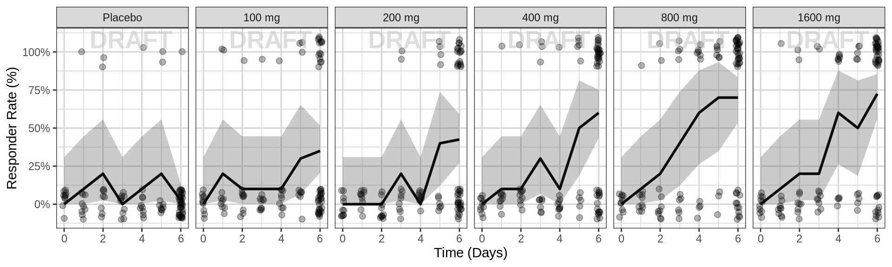
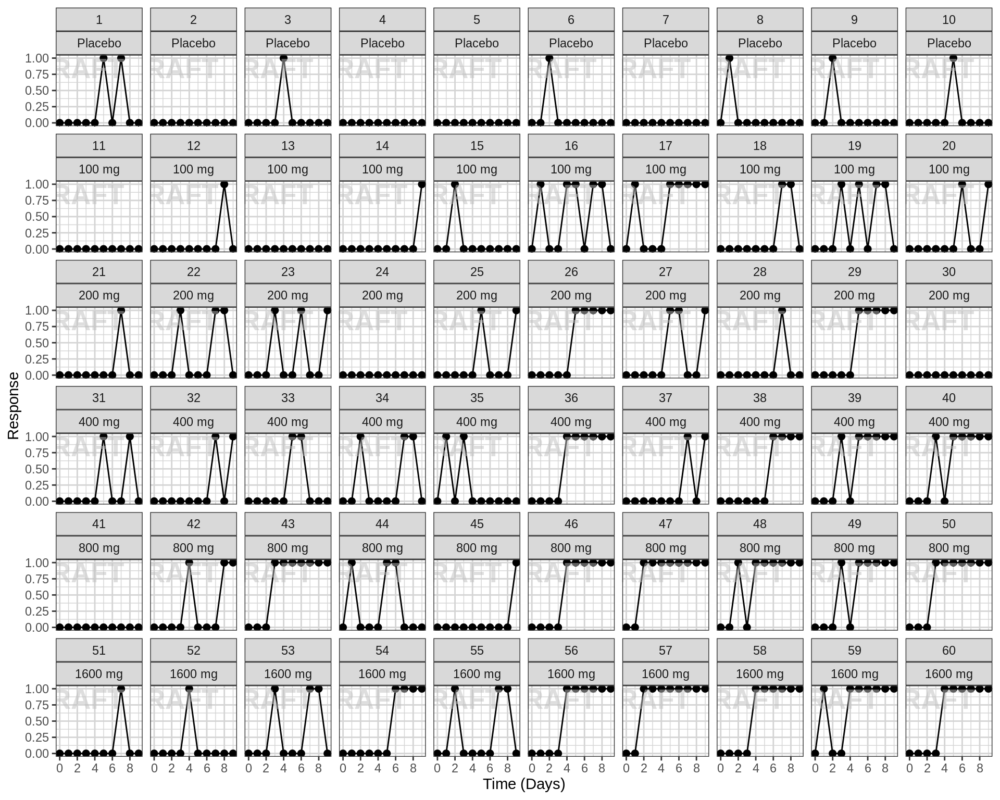

PD, Dose-Response - Binary Response
Overview
This document contains exploratory plots for binary response data as well as the R code that generates these graphs. The plots presented here are based on simulated data (see: PKPD Datasets). Data specifications can be accessed on Datasets and Rmarkdown template to generate this page can be found on Rmarkdown-Template. You may also download the Multiple Ascending Dose PK/PD dataset for your reference (download dataset).
Binary data is data that can take on one of two values. This often happens when there is a characteristic/event/response, etc. of interest that subjects either have/achieve or they don’t. Binary response data can also come out of dichotomizing continuous data. For example in the psoriasis indication the binary response variable PASI90 (yes/no) is defined as subjects achieving a PASI score of at least 90.
There are two broad categories of PD exploratory plots covered on this page
- Response vs Time, stratified by dose. You may also have heard these referred to as longitudinal (meaning over time).
- Response vs Dose at a particular time. For binomial response vs dose plots, fitting a logistic regression is often helpful, as you will see below.
These plots are displayed below.
Setup
# remove reference to home directory in libPaths
.libPaths(grep("home", .libPaths(), value=TRUE, invert=TRUE))
.libPaths(grep("usr", .libPaths(), value=TRUE, invert=TRUE))
# add localLib to libPaths for locally installed packages
.libPaths(c("localLib", .libPaths()))
# will load from first filepath first, then look in .libPaths for more packages not in first path
# version matches package in first filepath, in the case of multiple instances of a package
# library(rmarkdown)
library(gridExtra)
library(grid)
library(ggplot2)
library(dplyr)
library(RxODE)
library(caTools)
#flag for labeling figures as draft
draft.flag = TRUE
## ggplot settings
theme_set(theme_bw(base_size=12))Define Useful Graphics Functions
# annotation of plots with status of code
AnnotateStatus <- function(draft.flag, log.y=FALSE, log.x=FALSE, fontsize=7, color="grey") {
x.pos <- -Inf
if (log.x)
x.pos <- 0
y.pos <- -Inf
if (log.y)
y.pos <- 0
if(draft.flag) {
annotateStatus <- annotate("text",
label="DRAFT",
x=x.pos, y=y.pos,
hjust=-0.1, vjust=-1.0,
cex=fontsize,
col=color, alpha=0.7, fontface="bold")
} else {
annotateStatus <- NULL
}
return(annotateStatus)
}Load Dataset
The plots presented here are based on simulated data (see: PKPD Datasets). You may also download the Multiple Ascending Dose PK/PD dataset for your reference (download dataset).
my.data <- read.csv("../Data/Multiple_Ascending_Dose_Dataset2.csv")
# Define order for factors
my.data$TRTACT <- factor(my.data$TRTACT, levels = unique(my.data$TRTACT[order(my.data$DOSE)]))Provide an overview of the data
We start with Response vs Time, or longitduinal plots
Binary data is often summarized by displaying the percent of subjects in the “yes” category, e.g. the percent of “responders,” along with 95% confidence intervals. For generating confidence intervals, it is useful to bin data points by nominal time; confidence intervals should be calculated using the binom::binom.exact() function.
Responder rate (95% CI) by nominal time, colored or faceted by dose
Questions to ask when looking at these plots
- Does the response rate increase/decrease over time?
- Does response change with increasing dose?
- Do you notice a plateau in time?
- Do you notice a plateau with dose (Emax)?
Warning: Even if you don’t see a plateau in response, that doesn’t mean there isn’t one. Be very careful about using linear models for Dose-Response relationships. Extrapolation outside of the observed dose range could indicate a higher dose is always better (even if it isn’t).
When overlaying individual binomial data, it is often helpful to stagger the dots and use transparency, so that it is easier to see individual data points. If you do so, this should be clearly stated.
data_to_plot <- my.data[my.data$CMT==6,]
data_to_plot$TRTACT <- factor(data_to_plot$TRTACT, levels = rev(levels(data_to_plot$TRTACT)))
gg <- ggplot(data = data_to_plot,
aes(x=NOMTIME/24,y=LIDV, color = TRTACT, fill = TRTACT))+theme_bw()
gg <- gg + stat_summary(geom="errorbar",
fun.data = function(y){
data.frame(ymin = binom::binom.exact(sum(y), length(y),
conf.level = 0.95)$lower,
ymax = binom::binom.exact(sum(y), length(y),
conf.level = 0.95)$upper)
}, size = 1, width = 0.2)
gg <- gg + stat_summary(geom="point", fun.y=mean, size = 2)
gg <- gg + stat_summary(aes(group = TRTACT), geom="line",fun.y=mean, size = 1)
gg <- gg + guides(color=guide_legend(""),fill=guide_legend(""))
gg <- gg + xlab("Time (days)") + scale_x_continuous(breaks = seq(-1,9,1))
gg <- gg + ylab("Responder Rate (%)") + scale_y_continuous(labels=scales::percent)
gg
data_to_plot <- my.data[my.data$CMT==6,]
set.seed(12345)
data_to_plot$Response2 <- jitter(data_to_plot$LIDV, amount=0.1)
data_to_plot$DAY2 <- jitter(data_to_plot$PROFDAY, amount=0.1)
gg <- ggplot(data = data_to_plot,
aes(x=PROFDAY,y=LIDV))+theme_bw()
gg <- gg + geom_point(aes(x=DAY2,y=Response2), size=2, alpha = 0.3)
# gg <- gg + geom_line( aes(x=DAY2,y=Response2, group = ID), alpha = 0.3)
gg <- gg + stat_summary(aes(x=PROFDAY, y=LIDV), geom="line", fun.y=mean)
gg <- gg + stat_summary(aes(x=PROFDAY,y=LIDV),geom="ribbon",
fun.data = function(y){
data.frame(ymin = binom::binom.exact(sum(y), length(y),
conf.level = 0.95)$lower,
ymax = binom::binom.exact(sum(y), length(y),
conf.level = 0.95)$upper)
},alpha = 0.3, size = 1)
# gg <- gg + geom_smooth(aes(x=PROFDAY, y=LIDV))
gg <- gg + guides(color=guide_legend(""),fill=guide_legend(""))
gg <- gg + xlab("Time (days)") + scale_x_continuous(breaks = seq(-1,8,1))
gg <- gg + facet_grid(~TRTACT)
gg <- gg + ylab("Response") + scale_y_continuous(breaks=c(0,1)) +
coord_cartesian(ylim=c(-0.2,1.2))
ggExplore variability
Spaghetti plots of binary response over time, faceted by dose
Use spaghetti plots to visualize the extent of variability between individuals. The wider the spread of the profiles, the higher the between subject variability. Distinguish different doses by color, or separate into different panels.
Binary spaghetti plots may not be as informative as spaghetti plots for continuous data, however you can pick out the transition states from 0 to 1 and back. By looking at the transition states, ask yourself these questions: For each dose group, at what time have most of the subjects “responded”? How wide is the spread of “response time” across subjects (do all of them respond at the exact same time, or over a range of time?) Do you detect any dampening, or transitioning of response back to no response?
data_to_plot <- my.data[my.data$CMT==6,]
set.seed(12345)
data_to_plot$Response2 <- jitter(data_to_plot$LIDV, amount=0.1)
data_to_plot$DAY2 <- jitter(data_to_plot$PROFDAY, amount=0.1)
gg <- ggplot(data = data_to_plot,
aes(x=DAY2,y=Response2))+theme_bw()
gg <- gg + geom_point( size=2, alpha = 0.3)
gg <- gg + geom_line( aes(group = ID), alpha = 0.3)
gg <- gg + guides(color=guide_legend(""),fill=guide_legend(""))
gg <- gg + xlab("Time (days)") + scale_x_continuous(breaks = seq(-1,8,1))
gg <- gg + facet_grid(~TRTACT)
gg <- gg + ylab("Response") + scale_y_continuous(breaks=c(0,1)) +
coord_cartesian(ylim=c(-0.2,1.2))
gg
Explore irregularities in profiles
Plot individual profiles in order to inspect them for any unusual profiles. Look at the pattern of response/non-response over time and whether individuals switch from responder back to non-responder.
Response over time, faceted by individual, individual line plots
data_to_plot <- my.data[my.data$CMT==6,]
gg <- ggplot(data = data_to_plot,
aes(x=PROFDAY,y=LIDV))+theme_bw()
gg <- gg + geom_point( size=2) + geom_line( aes(group = ID))
gg <- gg + guides(color=guide_legend(""),fill=guide_legend(""))
gg <- gg + xlab("Time (days)")+ scale_x_continuous(breaks = seq(0,max(data_to_plot$PROFDAY)+1,7))
gg <- gg + facet_wrap(~ID+TRTACT,ncol = length(unique(data_to_plot$ID))/length(unique(data_to_plot$DOSE)) )
gg <- gg + ylab("Response")
ggExplore covariate effects on PD
Stratify by covariates of interest to explore whether any key covariates impact response. For examples of plots and code startifying by covariate, see Single Ascending Dose Covariate Section
Warning Be careful of interpreting covariate effects on PD. Covariate effects on PD could be the result of covariate effects on PK transfering to PD through the PK/PD relationship.
Explore Dose-Response relationship
One of the key questions when looking at PD markers is to determine if there is a dose-response relationship, and if there is, what dose is necessary to achieve the desired effect? Simple dose-response plots can give insight into these questions.
Responder rate (95% CI) by dose, for endpoint of interest
Both linear scale and log scale may be used for dose. Linear scale helps in seeing a plateau at large doses. Log-scale often helps to see all dose groups. If the plot on log-scale looks linear, a log-linear dose-response model could be fit, i.e. Response=Elog*log(1+C).
Questions to consider
- Do you see any relationship?
- Does response increase or decrease with dose?
- Is there a plateau (Emax or Emin) with drug effect? At what dose?
Warning: Even if you don’t see an Emax, that doesn’t mean there isn’t one. Be very careful about using linear models for Dose-Response relationships. Extrapolation outside of the observed dose range could indicate a higher dose is always better (even if it isn’t).
data_to_plot <- my.data[my.data$CMT==6,]
data_to_plot$DAY_label <- paste("Day", data_to_plot$PROFDAY)
data_to_plot$DAY_label[data_to_plot$DAY_label=="Day 0"] = "Baseline"
data_to_plot <- data_to_plot[data_to_plot$DAY_label%in%c("Day 5"),]
gg <- ggplot(data = data_to_plot, aes(x=DOSE,y=LIDV))+theme_bw()
gg <- gg + stat_summary(geom="errorbar",
fun.data = function(y){
data.frame(ymin = binom::binom.exact(sum(y), length(y),
conf.level = 0.95)$lower,
ymax = binom::binom.exact(sum(y), length(y),
conf.level = 0.95)$upper)
}, alpha = 0.5, size = 1, width= 0.2)
gg <- gg + stat_summary(geom="point", fun.y=mean, shape = 0)
gg <- gg + guides(color=guide_legend(""),fill=guide_legend(""))
gg <- gg + scale_y_continuous(labels=scales::percent) + ylab("Responder Rate (%)")
gg <- gg + xlab("Dose (mg)")
gg <- gg + geom_smooth( method = "glm",
method.args=list(family=binomial(link = logit)), color = "black")
pp1 <- gg + ggtitle("Dose on Linear Scale")
## Same plot but on a log scale
pp2 <- gg + scale_x_log10(breaks=unique(data_to_plot$DOSE)) + ggtitle("Dose on Log Scale")
grid.arrange(pp1,pp2,nrow=1)Responder rate (95% CI) by dose, faceted by visit
The crossectional Dose-Response curve which looks only at one timepoint defined in the protocol can obscure certain characteristics of the dose-response relationship. For example, if the response variable is much delayed compared to PK the maximal PD effect could occur much later than steady state PK is achieved. Looking only at the defined clinical endpoint has the potential miss this, especially in early clinical trials before the time course of the effect has been characterized. In addtion to looking at longitudinal PD over time (as in previous sections above), plotting the cross-sectional Dose-Response curves for different time points throughout the study can also be helpful. In the figure below, we plot the exposure response relationship at a number of different visits to see how the relationsihp might change over time.
data_to_plot <- my.data[my.data$CMT==6,]
data_to_plot$DAY_label <- paste("Day", data_to_plot$PROFDAY)
data_to_plot$DAY_label[data_to_plot$DAY_label=="Day 0"] = "Baseline"
data_to_plot <- data_to_plot[data_to_plot$DAY_label%in%c("Day 1","Day 3","Day 5"),]
data_to_plot$TRTACT <- factor(data_to_plot$TRTACT, levels = rev(levels(data_to_plot$TRTACT)))
gg <- ggplot(data = data_to_plot,
aes(x=DOSE,y=LIDV))+theme_bw()
gg <- gg + stat_summary(geom="errorbar",
fun.data = function(y){
data.frame(ymin = binom::binom.exact(sum(y), length(y),
conf.level = 0.95)$lower,
ymax = binom::binom.exact(sum(y), length(y),
conf.level = 0.95)$upper)
}, size = 1, width = 0.2)
gg <- gg + stat_summary(geom="point", fun.y=mean, size = 2, shape = 0)
gg <- gg + stat_summary(aes(group = TRTACT), geom="line",fun.y=mean, size = 1)
gg <- gg + geom_smooth( method = "glm",
method.args=list(family=binomial(link = logit)), color = "black")
gg <- gg + guides(color=guide_legend(""),fill=guide_legend(""))
gg <- gg + xlab("Dose (mg)")
gg <- gg + ylab("Responder Rate (%)") + scale_y_continuous(labels=scales::percent)
gg + facet_grid(~DAY_label)
R Session Info
sessionInfo()## R version 3.6.1 (2019-07-05)
## Platform: x86_64-apple-darwin15.6.0 (64-bit)
## Running under: macOS Mojave 10.14.3
##
## Matrix products: default
## BLAS: /System/Library/Frameworks/Accelerate.framework/Versions/A/Frameworks/vecLib.framework/Versions/A/libBLAS.dylib
## LAPACK: /Library/Frameworks/R.framework/Versions/3.6/Resources/lib/libRlapack.dylib
##
## locale:
## [1] en_US.UTF-8/en_US.UTF-8/en_US.UTF-8/C/en_US.UTF-8/en_US.UTF-8
##
## attached base packages:
## [1] grid stats graphics grDevices utils datasets methods
## [8] base
##
## other attached packages:
## [1] reshape_0.8.8 lubridate_1.7.4 survminer_0.4.6
## [4] ggpubr_0.2.3 magrittr_1.5 survival_2.44-1.1
## [7] DT_0.8 RxODE_0.9.1-6 haven_2.1.1
## [10] readr_1.3.1 readxl_1.3.1 xtable_1.8-4
## [13] tidyr_0.8.3 zoo_1.8-6 gridExtra_2.3
## [16] xgxr_1.0.2 caTools_1.17.1.2 dplyr_0.8.3
## [19] ggplot2_3.2.1
##
## loaded via a namespace (and not attached):
## [1] jsonlite_1.6 binom_1.1-1 splines_3.6.1
## [4] shiny_1.3.2 assertthat_0.2.1 pander_0.6.3
## [7] cellranger_1.1.0 yaml_2.2.0 pillar_1.4.2
## [10] backports_1.1.4 lattice_0.20-38 glue_1.3.1
## [13] digest_0.6.20 RColorBrewer_1.1-2 promises_1.0.1
## [16] ggsignif_0.6.0 polyclip_1.10-0 colorspace_1.4-1
## [19] htmltools_0.3.6 httpuv_1.5.2 Matrix_1.2-17
## [22] plyr_1.8.4 pkgconfig_2.0.2 broom_0.5.2
## [25] purrr_0.3.2 scales_1.0.0 km.ci_0.5-2
## [28] tweenr_1.0.1 later_0.8.0 KMsurv_0.1-5
## [31] ggforce_0.3.1 tibble_2.1.3 generics_0.0.2
## [34] farver_1.1.0 withr_2.1.2 lazyeval_0.2.2
## [37] crayon_1.3.4 mvnfast_0.2.5 mime_0.7
## [40] memoise_1.1.0 evaluate_0.14 nlme_3.1-140
## [43] MASS_7.3-51.4 forcats_0.4.0 data.table_1.12.2
## [46] tools_3.6.1 hms_0.5.1 stringr_1.4.0
## [49] munsell_0.5.0 compiler_3.6.1 rlang_0.4.0
## [52] units_0.6-4 rstudioapi_0.10 htmlwidgets_1.3
## [55] crosstalk_1.0.0 lotri_0.1.1 bitops_1.0-6
## [58] PreciseSums_0.3 labeling_0.3 rmarkdown_1.15
## [61] gtable_0.3.0 codetools_0.2-16 markdown_1.1
## [64] reshape2_1.4.3 R6_2.4.0 knitr_1.24
## [67] dparser_0.1.8 survMisc_0.5.5 zeallot_0.1.0
## [70] stringi_1.4.3 Rcpp_1.0.2 vctrs_0.2.0
## [73] png_0.1-7 tidyselect_0.2.5 xfun_0.9